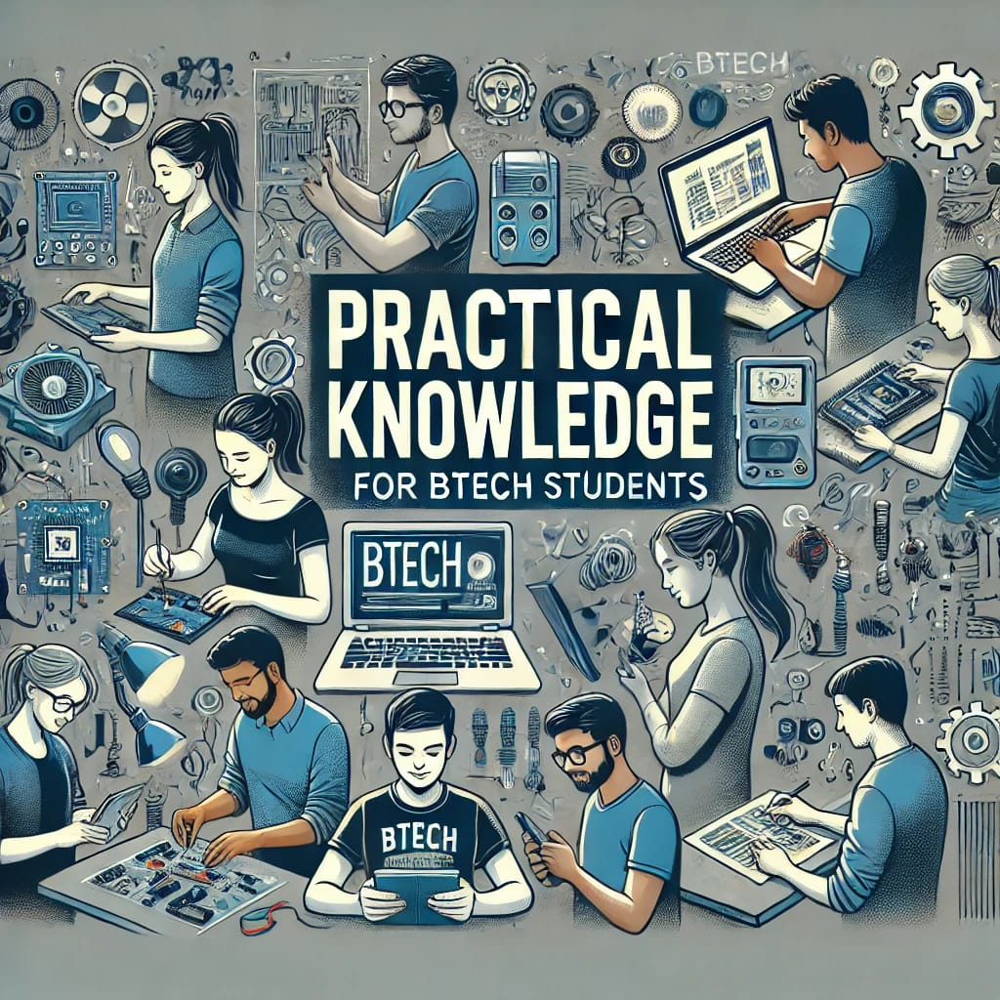
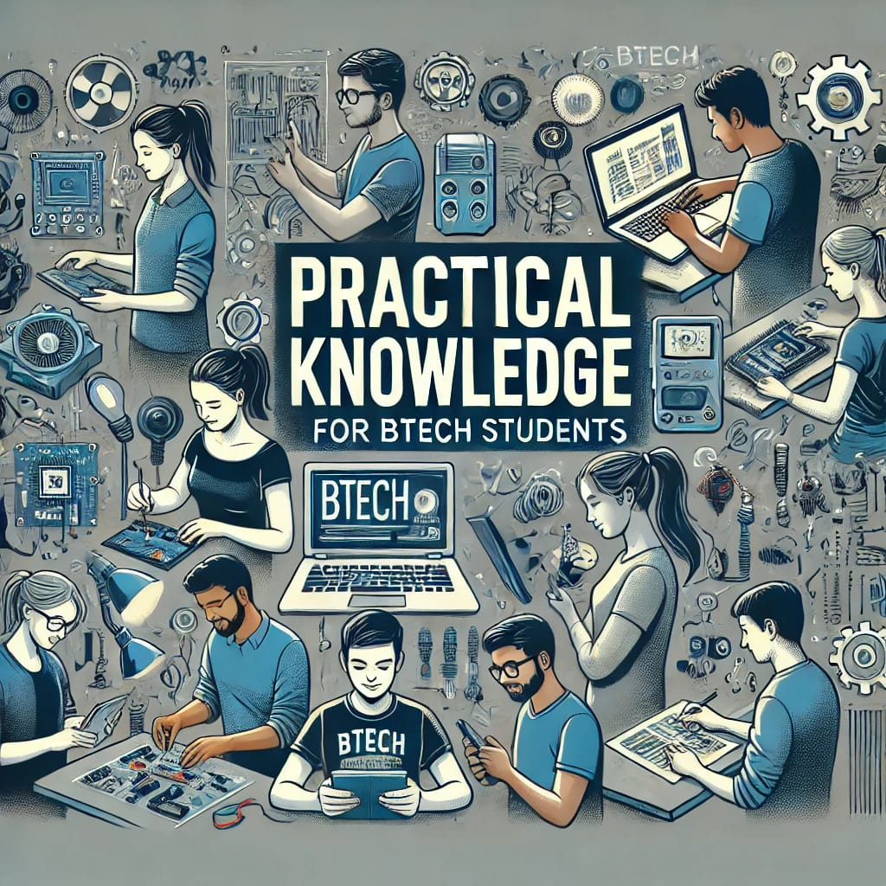
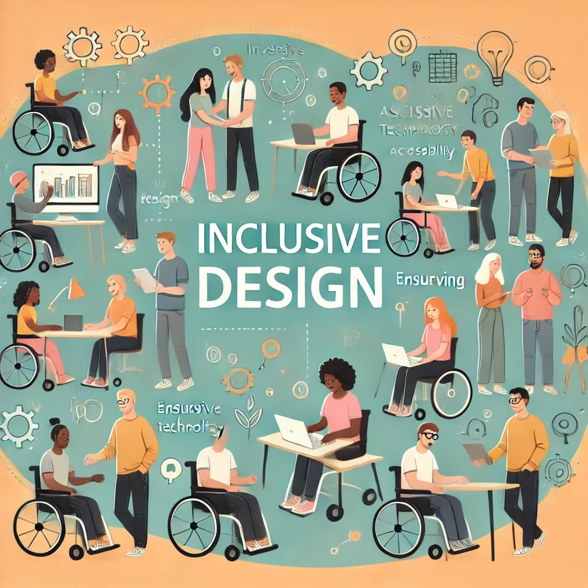
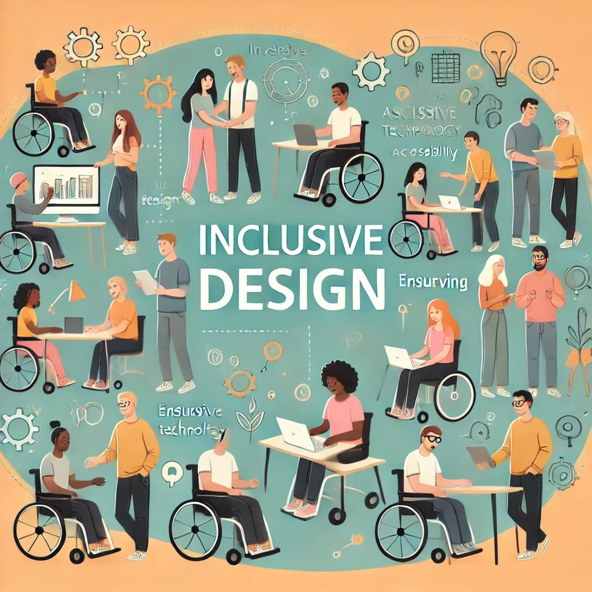

The complete meaning of Transformative Quadrenail
A platform that helps the students who are currently studying B.Tech and transform their four years of journey in all dimensions in different aspects of their desired goal
How to use this platform
Just explore the different options shown below by clicking the respective image tabs shown so that you will be getting complete guidance in the ddesired areas.
Areas that are included to explore are
Carrer Pathways : If you just want to choose a carrer pathway and want complete guidance to what to do in the four year span, this will help you
Unlock your potential : If you want to know what actually that you can perform in the four years this will help you
Practical Knowlwdge : Acquiring only thory knowlwdge from the curriculum wont be enough to sustain the competition so this place will help you to how to acquire the practical knowledge
Industry Expert Insights : What are the industry expectations from the btech student after completing their degree. this page will give you details about that
Job Market trends: What are the essential aspects that going on to be done in future and what will be the stastics of the jobs that are currently and what new roles will emerge and how to sustain your jobs with the increasing technologies.
Year wise plans: Aspiring to choose one path and follow the comple subject pathflows so that you will be gettingb neat and steady plan that you can implement and work throught your entire four years of journey.
Inclusive Design : If you want to know what actually that you can perform in the four years this will help you

 


 
